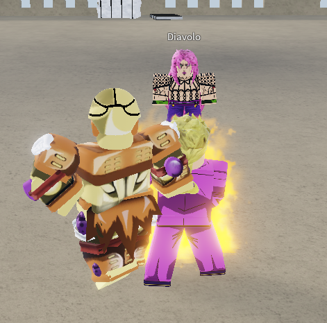
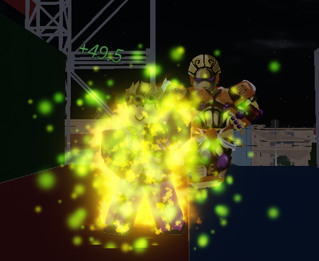

Глава 3 Джорно попал в юбу тоесть Your Bizzare Advanture он стал квадратом и его стенд тоже.Джорно не понимал что с ним сделали. Но тут появился стенд Валентайна - D4C и сказал Джорно что тот появился в игровой вселенной откуда он не выберется.
Он осмотрелся вокруг и увидел Буччилати
Они говорили о том как попали сюда.Но тут Буччи сказал что он знает как отсюда выбратся.Джорно спросил- "как?".Буччи ответил- "довести свой стенд до совершенства , заполучив стрелу реквеема у Дьяволо убив его". Они пошли убивать Дьяволо.
Способности:Способности Gold Experience просто восхитительны. 1 способность- бараж
2 способность - тяжёлый удар
3- удары ногой
4- спаун дерева
5- хилл себя
Пробежимся по всем частям ДжоДжо)